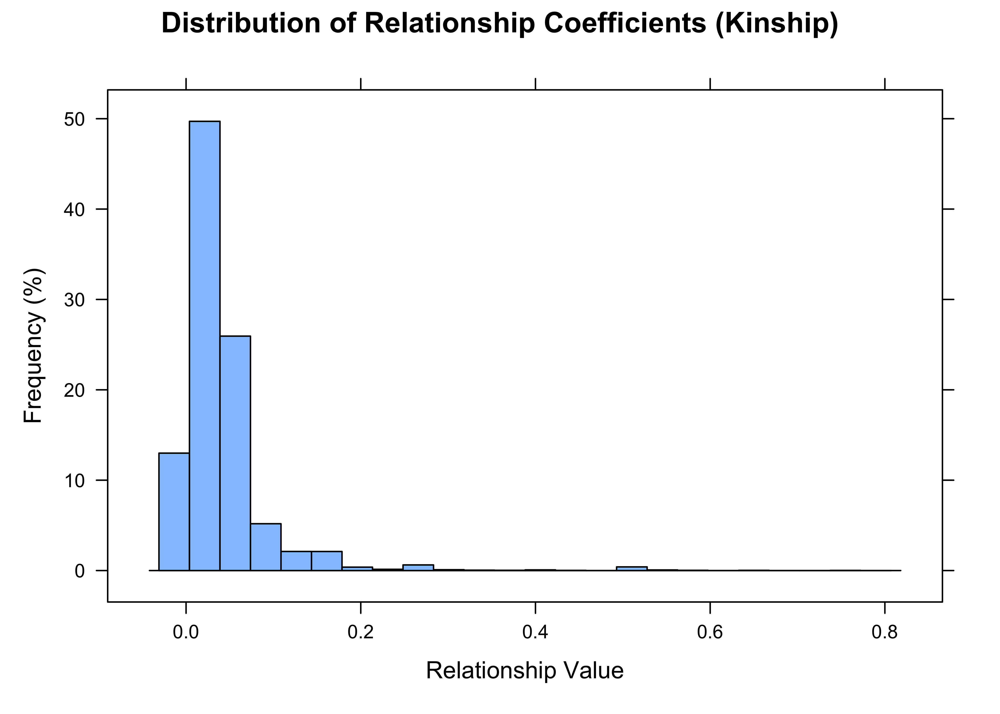
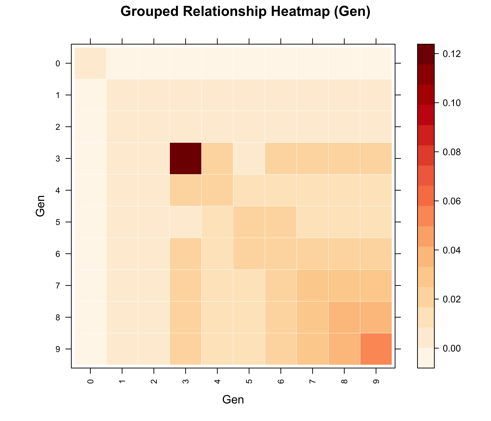

Relationship matrices without the matrix: fast pedigree computation in R with visPedigree
Additive, dominance and epistatic relationship matrices, O(n) inversion, full-sib compaction, and matrix-free products on a million-record pedigree.
R
Genetics
Pedigree
Breeding
r-bloggers
Author
Sheng Luan
Published
September 23, 2026
Every genetic evaluation runs on one object: the additive relationship matrix A. BLUP breeding values, variance-component estimation, mate allocation, diversity management — all of them reduce, sooner or later, to multiplying or inverting a matrix built from the pedigree. The problem is that A is an n × n object, and n is the number of individuals you have ever recorded. A pedigree of ten thousand individuals needs 800 MB for a single dense matrix; a pedigree of one million would need about 8 TB. Long before your pedigree is “large” by breeding standards, the matrix itself becomes the bottleneck.
In the first tutorial of this series I showed how visPedigree turns raw pedigree tables into publication-ready graphs; the second covered the diversity-analysis pipeline. This closing article is about the computational core underneath both: how the package builds relationship matrices fast when you need them — and how it avoids building them at all when you don’t.
What does the A matrix look like? — building and visualizing it.
Who is inbred? — inbreeding coefficients without the matrix.
What about dominance and epistasis? — the D and AA matrices.
What if I need the inverse? — A⁻¹ in O(n) time.
What if full-sib families explode the matrix? — compact mode.
What if the pedigree has a million records? — matrix-free products.
One tidy step, every computation after
As in the previous articles, everything starts from tidyped(). It checks, orders, and indexes the pedigree once; every matrix routine then works on the tidied object:
pedmat() computes the additive (numerator) relationship matrix with the Meuwissen & Luo (1992) algorithm, implemented in Rcpp:
A <-pedmat(tp, method ="A")
The result is a pedmat object — an ordinary matrix underneath, with metadata attached. summary_pedmat() reports the essentials:
summary_pedmat(A)
Summary of Pedigree Matrix (A)
========================================
Input Size: 4399 individuals
Calculated Size: 4399 individuals
Matrix Properties:
- Mean off-diagonal relationship: 0.041193
- Density (non-zero): 91.26%
========================================
For this pedigree of 4399 individuals the matrix is 91% non-zero: after a few generations of a closed population, almost every pair of individuals shares some ancestry. The diagonal holds 1 + F (one plus the inbreeding coefficient); the off-diagonal holds twice the kinship between each pair.
Printing a 4,399 × 4,399 matrix is pointless, but zooming into one full-sib family — two parents and eight of their offspring — shows exactly how the recursion works:
The two parents are unrelated (0); each parent shares 0.5 with every offspring; the eight full-sibs share 0.5 among themselves; and the diagonal is 1 + F = 1 here. Every entry of the full matrix is built from these same few rules.
Numbers become clearer as a picture. vismat() draws the heatmap (here for a hundred individuals from the six largest full-sib families of the last three generations, hierarchically clustered):
Figure 1: Additive relationship matrix for 100 individuals from the six largest full-sib families in the last three generations of deep_ped, hierarchically clustered. The dark red blocks along the diagonal are full-sib families; the pale background is the low-level relatedness that accumulates in a closed population.
The distribution of all pairwise coefficients is just as informative — it is the relatedness background against which any mating decision stands out:
vismat(A, type ="histogram")

Figure 2: Distribution of pairwise additive relationship coefficients (lower triangle of A) in deep_ped. The right tail — parent-offspring (0.5), full-sib (≈0.5) and half-sib (≈0.25) pairs — sits far above the background mean of 0.04.
Question 2: Who is inbred?
If all you need is the diagonal, you should never pay for the full matrix. method = "f" returns just the inbreeding coefficients, as a named vector:
f <-pedmat(tp, method ="f")head(sort(f, decreasing =TRUE))
These are the same coefficients that the visualization tutorial drew directly onto the pedigree graph with visped(showf = TRUE), and that pedfclass() bins into severity classes for monitoring.
Question 3: What about dominance and epistasis?
Additive relationships capture only part of the genetic covariance. pedmat() also computes the dominance matrix D and the additive-by-additive epistatic matrix AA = A ⊙ A:
D <-pedmat(tp, method ="D", threads =0)summary_pedmat(D)
Summary of Pedigree Matrix (D)
========================================
Input Size: 4399 individuals
Calculated Size: 4399 individuals
Matrix Properties:
- Mean off-diagonal relationship: 0.002134
- Density (non-zero): 52.63%
========================================
D is numerically far sparser than A — dominance relationships are non-negligible only between full-sibs and similarly close pairs. In this pedigree, almost half of all off-diagonal pairs are exactly zero, and only 0.4% reach the full-sib level of 0.25:
That sparsity is exactly the structure you want when separating additive from dominance variance. Multi-threading (threads) is available for D and, on large pedigrees, for A⁻¹.
A word of caution on the inverses of these matrices: D⁻¹ and AA⁻¹ require a general O(n³) inversion. That is fine up to a couple of thousand individuals (about 0.15 s at n = 2,000 on a laptop), but impractical beyond — see Question 5 for the escape hatch.
Question 4: What if I need the inverse?
Here is a small miracle of pedigree computation. The mixed-model equations of BLUP need A⁻¹, not A — and A⁻¹ is easier to compute. Henderson’s (1976) rules build it directly from the pedigree in O(n) time, and it is sparse even when A is dense:
Ainv <-pedmat(tp, method ="Ainv")
# Fraction of non-zero elements in A vs its inversedense_A <- Matrix::nnzero(A) /prod(dim(A))dense_Ai <- Matrix::nnzero(Ainv) /prod(dim(Ainv))c(A =round(dense_A, 4), Ainv =round(dense_Ai, 4))
A Ainv
0.9126 0.0012
The same family as above makes the structure of Henderson’s rules visible — this time printing the block is the whole point, because almost everything is zero:
Each offspring carries a 2 on its own diagonal and a −1 against each parent; the parents’ diagonals (13.5 and 12.5) accumulate a ½ from every offspring plus terms from their own parents and other mates elsewhere in the pedigree; the 11.5 between the parents is ½ from each of their 23 shared offspring. Every other entry of the 4,399 × 4,399 matrix is exactly zero.
Where A was 91% filled, A⁻¹ is 99.9% empty — each individual contributes only a handful of terms involving itself, its mates, and its parents. This asymmetry is why routine genetic evaluation of millions of animals is possible at all.
Question 5: What if full-sib families explode the matrix?
Animal and plant breeding pedigrees — fish, poultry, trees — often contain full-sib families of hundreds or thousands of individuals. Full-siblings share identical relationships with every other individual in the pedigree, so storing each of them separately is pure waste. compact = TRUE keeps one representative per full-sib family:
The matrix shrinks from 178431 individuals to a few thousand unique relationship patterns. You can still query any pair of original individuals — merged siblings are looked up automatically:
ids <- tpb$Ind[tpb$Gen ==max(tpb$Gen)][1:4]outer(ids, ids, Vectorize(function(i, j) query_relationship(Ac, i, j)))
These four individuals from the last generation turn out to be full-sibs (off-diagonal ≈ 0.50) with a trace of inbreeding (diagonal ≈ 1.004) — looked up directly from the compact representation.
and visualize the compact matrix without expanding it — by aggregates group-level means directly from the compressed form:
vismat(Ac, by ="Gen", reorder =FALSE)

Figure 3: Generation-level mean additive relationships in big_family_size_ped, computed directly from the compact matrix (178,431 individuals represented by 2,626 unique patterns). The diagonal is within-generation coancestry: generation 3 stands out as a bottleneck — only 1,652 individuals from 70 families, unusually related to each other — after which the population rebounds in size while mean relatedness keeps climbing (0.02 at generation 4 to 0.06 at generation 9).
Question 6: What if the pedigree has a million records?
Sometimes you don’t need the matrix at all — you need its product with a vector. The canonical example is diversity management: if c is a vector of contributions of selected candidates to the next generation, then c'Ac is the average relationship of that portfolio, i.e. the rate at which it burns diversity. Colleau (2002) showed how to compute Ax and A⁻¹x by pedigree traversal in O(n) time, never touching the n × n object. pedprod() implements exactly that.
To see what this buys, here is a real-scale test: a simulated pedigree of 1,000,150 individuals — 150 founders, 50 overlapping generations, six founder source populations — the same data used in the Chinese post on million-record pedigrees:
Both products finish in a fraction of a second — on a pedigree whose dense A matrix would occupy about 8 TB of RAM.
Because named inputs are aligned by ID (omitted individuals are zero), contribution schemes map straight onto the diversity workflow of the previous article. Here are two candidate-use schemes for the most recent generation — equal contributions from 100 candidates versus concentration on 10 — evaluated in a single call:
cand <- tpm$Ind[tpm$Gen ==max(tpm$Gen)]set.seed(1)cand100 <-sample(cand, 100)schemes <-cbind(Equal100 =setNames(rep(1/100, 100), cand100),Top10 =setNames(c(rep(1/10, 10), rep(0, 90)), cand100))Ac <-pedprod(tpm, schemes)# Average relationship of each scheme: c' A ccolSums(schemes * Ac[rownames(schemes), ])
Equal100 Top10
0.4743936 0.5352261
Concentrating contributions on fewer candidates yields the higher average relationship — more diversity lost per generation — quantified here without ever materializing a relationship coefficient.
Finally, the scaling picture. Explicit matrices grow quadratically in both time and memory; the matrix-free product does not:
Figure 4: Cost of the explicit additive relationship matrix versus the matrix-free product, on prefixes of the million-record pedigree. Left: memory occupied by the dense matrix, growing quadratically to 800 MB at n = 10,000 — at one million individuals it would take about 8 TB. Right: elapsed time of pedmat(A) (red) and of pedprod(Ax) on the full 1,000,150-individual pedigree (green), which finishes in about 0.2 s.
Where to go from here
This article covered the computational core: relationship matrices (pedmat() for A, D, AA, their inverses, and inbreeding coefficients), full-sib compaction (compact = TRUE, query_relationship(), expand_pedmat()), matrix visualization (vismat()), and matrix-free products (pedprod()). Together with the visualization and diversity-analysis tutorials, this completes the visPedigree workflow: tidy once with tidyped(), then plot, analyze, or compute — at any pedigree size.
For published research using visPedigree, see the Applications page.
If visPedigree contributes to your published work, please cite it:
Luan S, Kong J, Xia Z, Kang Z, Qiang G, Luo K, Sui J. 2026. visPedigree: a comprehensive R package for tidying, analyzing, and visualizing breeding pedigrees. Bioinformatics Advances. DOI: 10.1093/bioadv/vbag210.
(citation("visPedigree") always returns the citation for your installed version.)